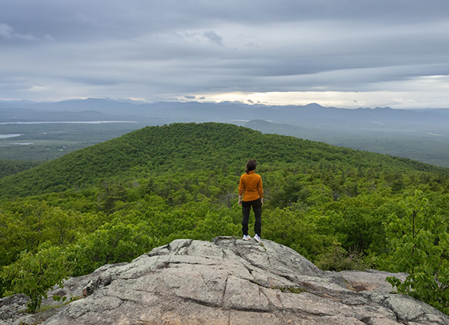
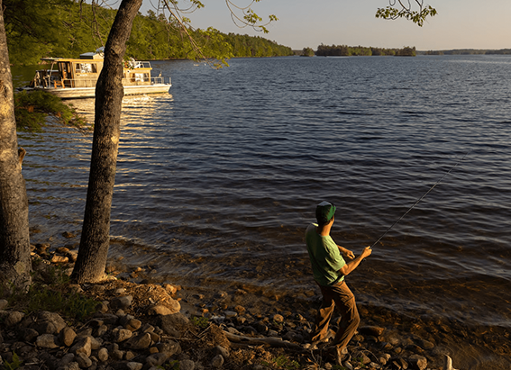

NATIONAL GEOGRAPHIC
How Scottish adventurer Aldo Kane is pushing the boundaries of exploration
TRAVEL
What kick-started your career as an extreme adventurer?
I joined the Royal Marines at 16, where I enrolled into the British Commandos, the longest, hardest infantry training in the world. I spent seven months learning skills including survival, orienteering and signalling before going on to become one of the youngest Elite Commando Reconnaissance Snipers in the UK armed forces, serving in destinations from Northern Ireland to the Middle East. This career path taught me how to survive in some of the world’s most extreme environments. I think that’s probably what set me off on my path of adventure.
Since then, you’ve tackled expeditions in a variety of remote locations. Which proved the most challenging?
From a physical point of view, it has to be rowing across the Atlantic with Team Essence [a group of five British men] from mainland Europe to mainland South America. We completed it in 50 days, 10 hours and 36 minutes. We’re not sure if anyone had ever attempted the expedition before. This made it particularly challenging as we didn’t know how long it would take or what the most treacherous parts would be a true adventure in every sense of the word. There’s a lot of planning beforehand, but, ultimately, you row for two hours, then you rest for two hours, and so forth. It’s a long time to spend in your own headspace. At one point, the closest person to us was Tim Peake up in the International Space Station, which makes you realise just how vast and lonely the Atlantic Ocean is.
You now run Vertical Planet, a company that provides safety consultation for TV and film crews in high-risk environments. What has been your most exciting project?
Active volcanoes have to be the most extreme environments I’ve worked in. For the 10-part National Geographic series Welcome to Earth, we filmed Will Smith inside Mount Yasur in Vanuatu while it was erupting, which included explosions and lava bombs. Everything’s telling you to get away: there are poisonous gasses and hurricane-force winds, and the air is filled with particles of silica and glass. We obviously spent as little time as possible in there, got the filming done and then got the hell out.
What’s the role of exploration in the 21st century?
With so much of the planet left to understand, I think our role should still be to explore, but to do it leaving as little trace as possible and giving back to the local communities in the areas we’re working in or travelling to. When I look back to my early days of exploring, it was a very selfish, self-centred activity. Now, particularly in the last three to four years, I always try to tell a story, which is ultimately always connected to how the environment and climate are changing. I’m fortunate to have a large audience, so I feel it’s my duty to teach and pass these experiences on.
What would you change in the world of travel?
The carbon footprint. I have to travel quite a bit for work, so I’m constantly debating if the journey is worthwhile and what my impact is. I flew to Greenland last year with work, but once we arrived, we made sure we didn’t use any form of transport other than walking and skiing.
What’s the best advice you’ve ever been given?
What we think about is what we become. I wish somebody had told me that as a child there’s so much power and control in allowing your thoughts to become your reality. For anyone who wants to travel more, however, my advice is to just get out there. Start small it doesn’t have to be a crazy, month-long expedition.
Comments :
- john Very good
- john Very good
Leave a Reply
Your email address will not be published. Required fields are marked*
Related posts:
-
 What's it like to travel on the longest daily running train service in the US
What's it like to travel on the longest daily running train service in the USI’m sitting in the observation car on Amtrak’s California Zephyr, a train that trundles cross-country for 2,438 miles, making it the longest daily-running rail service in the US. From its starting point near San Francisco to its final destination in Chicago
View article -
Maine's mountains and lakes offer space to pause and wonder
For some people, the mention of Maine evokes sea breezes and vacations at one of its many beautiful beaches. For others, visions of weathered cottages, charming towns, and maritime history come to mind.
View article -
Fireflies and lighthouses A tour of Maine’s MidCoast
There's something about the light in Maine. During the day, sunshine reflects off crisp blue waters, casts angles across tidy seaside cottages, and illuminates curious creatures in tide pools.
View article